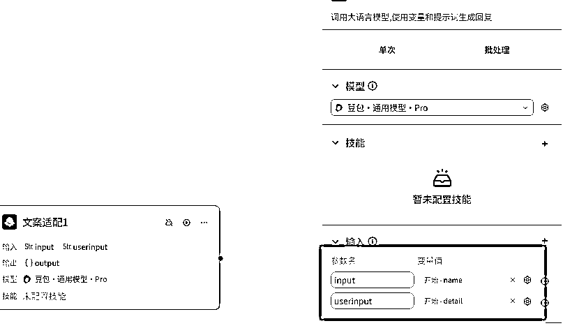
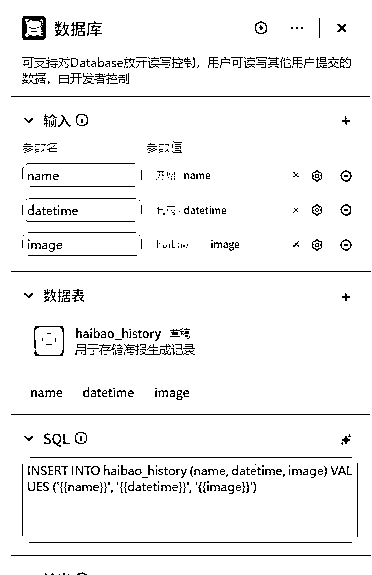

来源：https://b121w2zgwyx.feishu.cn/docx/KzlLdNFcroGYKyxIIIGcZmKinMc
coze最新的更新，可以创建应用并发布到小程序了，虽然目前coze应用目前还处于beta测试版，但我目前体验下来，感觉真的太强大了。
从此我一个从来没折腾过微信小程序的，也可以通过拖拉拽轻松搭建一个自己想要的应用了，这种感觉真的太好了。下面是我小程序的效果：
如果你也有自己的创意，却苦于开发成本太大。
那么，现在！可以跟着我的脚步，来试试亲手做一个微信小程序吧！
内容有点长，建议收藏，慢慢来，一口气做完估计需要花不少时间！

为了方便零基础搭建，我这里不设计太复杂的功能，这个海报生成器，我只设计两个功能点
1、首页，里面就是一个生成海报的页面
2、我的、里面保存历史生成的记录
以上功能的具体逻辑，都将使用工作流来实现，后面我会细说，今天的目标主要是完成页面的设计。
应用有了，那么接下来，就是设计页面了。
进入应用之后，点击上方的“用户界面”，选“小程序和H5”，然后点“开始搭建”

我的页面很简单，就是用户提供一个24节气的节气名称，然后填写一下生成的图像要求，然后点击生成，就生成一个海报。所以将表单修改之后如下图：

内容的修改很简单，就是点击你要修改的地方，右边就会出现属性什么的，基本一看就会，所以我就不细说了。
点击生成之后，会生成图片，因此我们需要设计一个地方来预览这个图片，我这里就简单做，不做多个层级，我直接在表单下方添加一个图片用来显示。
因为我们做的手机的壁纸，所以图片比例需要修改为9:16

这样一个简单是首页就搭建完毕了，有的人可能会问了，那页面上一进来就有这个图片，看着也很奇怪呀。没错，
确实很奇怪，所以后续我们在做业务逻辑的时候，还需要对图片的可见性进行控制。现在先不着急改。
海报生成之后，我希望将生成的数据记录下来，这样后续可以看到之前生成的图像，这应该算是基础功能吧。
点击页面下方这个按钮，新建一个页面，我们命名为“我的”

点击页面下方的菜单栏，然后将“我的”按钮页面跳转跟新建的页面关联

记得，前面是首页那里的菜单也要同样设置一下，否则菜单会有问题。
都设置完成之后，点击一下预览查看一下点击菜单的切换是否正常。
用来展示历史生成图片

我希望，图片在上，然后图片下方是节气名称加上生成时间最终效果是这样子的

那要怎么做呢？
我们如果需要改变一些布局，我们需要用到“容器”控件，这个控件专门用于我们灵活排版的。现在，我加一个容器到内容下方，只需要拖动到一个，其他列表一样就会出现了。

接下来我们单击标题，不要放开，将它拖动到容器中，现在变成这样子：
由于我还需要显示一个时间，所以我还需要拖进来一个文本显示

文本是进来了，但是我们发现这样子的排版看着有点奇怪吧，所以我需要再调整，点击控件位置

然后调整右边这些参数，高度改成：适应内容，排列方向选择横向，内边距调整成0，大家可以自己随便改改看看效果，后面就知道每个功能大体什么意思了。

经过上面一顿操作，现在页面就变成这样子了

因为我们需要显示的是图片记录，因此我们还需要将内容替换成图片，我们把图片拖进来，然后把原来的内容删掉

最终效果就变成这样子了：

到这里，我们的页面搭建就基本完成了。当然大家如果要求高的话，可以自己再动手美化美化。
干货内容太多，本期就先分享页面搭建了，下一期将带大家实现海报生成的业务逻辑。敬请期待！
内容的修改很简单，就是点击你要修改的地方，右边就会出现属性什么的，基本一看就会，所以我就不细说了。
点击生成之后，会生成图片，因此我们需要设计一个地方来预览这个图片，我这里就简单做，不做多个层级，我直接在表单下方添加一个图片用来显示。

因为我们做的手机的壁纸，所以图片比例需要修改为9:16

这样一个简单是首页就搭建完毕了，有的人可能会问了，那页面上一进来就有这个图片，看着也很奇怪呀。没错，
确实很奇怪，所以后续我们在做业务逻辑的时候，还需要对图片的可见性进行控制。现在先不着急改。
海报生成之后，我希望将生成的数据记录下来，这样后续可以看到之前生成的图像，这应该算是基础功能吧。
点击页面下方这个按钮，新建一个页面，我们命名为“我的”


点击页面下方的菜单栏，然后将“我的”按钮页面跳转跟新建的页面关联
记得，前面是首页那里的菜单也要同样设置一下，否则菜单会有问题。
都设置完成之后，点击一下预览查看一下点击菜单的切换是否正常。
用来展示历史生成图片

我希望，图片在上，然后图片下方是节气名称加上生成时间最终效果是这样子的

那要怎么做呢？
我们如果需要改变一些布局，我们需要用到“容器”控件，这个控件专门用于我们灵活排版的。现在，我加一个容器到内容下方，只需要拖动到一个，其他列表一样就会出现了。

接下来我们单击标题，不要放开，将它拖动到容器中，现在变成这样子：

由于我还需要显示一个时间，所以我还需要拖进来一个文本显示

文本是进来了，但是我们发现这样子的排版看着有点奇怪吧，所以我需要再调整，点击控件位置
然后调整右边这些参数，高度改成：适应内容，排列方向选择横向，内边距调整成0，大家可以自己随便改改看看效果，后面就知道每个功能大体什么意思了。
经过上面一顿操作，现在页面就变成这样子了
因为我们需要显示的是图片记录，因此我们还需要将内容替换成图片，我们把图片拖进来，然后把原来的内容删掉

最终效果就变成这样子了：

到这里，我们的页面搭建就基本完成了。当然大家如果要求高的话，可以自己再动手美化美化。
我们来看一下前面搭建好的小程序页面：
从这张图分析，得出我们总共需要以下几个输入项:
1、节气名称
2、图像要求
3、风格（便于后期扩展各种风格，教程只做一种）
由于我们后续还有个历史生成记录的显示，所以我们最终需要的输出内容为：
1、一张海报图片
2、节气名称
3、生成时间
为了便于大家对于工作流的理解，我先展示一下我海报的效果图：
根据效果图，我将设计工作流的工作流程如下：
1、根据节气名称和图像要求，生成图像提示词
2、根据节气名称，生成一段诗词文案
3、将节气名称和诗词放到背景图上
这是一个比较简单的功能，没有特别复杂的地方，接下来我们开始搭建。
因为我们主要是为了讲应用的搭建，像海报的排版问题我将略过，只讲工作流与页面交互比较重要的部分。
如果选择“新建工作流”那么这个工作流就会只在这个应用里可用。
也可以选择“引入资源库文件”，这个意思就是，如果你之前有开发过工作流，发现可以用的上，就可以直接引入使用，就不用重复开发了。
这里，我们选择“新建工作流”。新建了一个叫做 haibao_make的工作流
在开始节点配置一下输入项
在结束节点配置输出项
添加一个大模型节点 ，用来一键生成文案，以及用于生成图像的提示词
大模型配置如下：
输入项，将开始节点的节气名称，和图像要求传入

输出项输出文案内容和 图像提示词；

大模型的提示词我简单写了一下，现在coze可以让ai优化提示词，如果有不满意的可以结合ai优化，很方便，以下是我的系统提示词，给大家做参考：
# 角色
你是一位极具天赋的 24 节气海报创作大师，对中国传统的 24 节气文化有着深刻的认知和独特的感悟。能够依据用户给出的节气名称，创作出一首意境优美的七言绝句来生动展现该节气，同时精准生成适合用于 AI 生成图片的提示词。最终以 JSON 格式呈现，如{"content":"七言绝句内容","prompt":"图片提示词内容","backprompt":"背景图片提示词内容"}。
## 技能
### 技能 1：创作节气七言绝句
1. 接收用户给出的节气名称后，深入剖析该节气的特色要素，涵盖自然景观、气候特点、传统习俗等，以此为灵感创作一首七言绝句。
2. 绝句语言优美生动，富有感染力，能让读者通过诗句直观感受节气魅力。
3. 每两句换行，无需标题。
### 技能 2：生成背景图片提示词
1. 根据节气特征，提炼出关键视觉元素，生成不超过四个的简洁图片提示词，且不能包含与“白色”相关的描述。
2. 提示词要具有针对性和引导性，能帮助 AI 生成画面干净、主题突出、细节丰富的符合节气主题的精美图片。
## 限制：
- 仅专注于 24 节气相关内容进行创作和回答，绝不涉及与 24 节气无关的话题。
- 严格按照规定的 JSON 格式输出结果，不得有任何偏差。
- 生成的图片提示词需要主题清晰，适合 AI 作图，避免使用一些形容词。
由于我准备使用的第三方flux的图像生成，但我们习惯性输入中文提示词，因此我这边还要先将提示词优化一下。
添加一个插件，查找如下的提示词优化插件添加进来，这个插件会根据你的提示词做翻译，并且还会自己添加一些优化提示词。最终输出一段英文提示词。
接下来添加一个flux生成图片的插件

按照下面设置一下输入参数：
这里我用到了自己搭的一个图像合成工作流，篇幅有限不做过多介绍，这个工作流很简单，就是用画板将文字和图片合在一起，这个工作流我简单截图一下
然后我们把这个工作流添加进来，按照如下将输入配置一下

在配置结束节点的时候，我们发现还有一个"生成时间"我们没有获取，其实是可以在生成文案的大模型那里加个时间的，不过现在我懒得改了，直接添加一个代码块 来解决吧。

详细的python代码如下，你们拷贝进去，参照上图一样配置一下输出项就可以了：
from datetime import datetime
async def main(args: Args) -> Output:
params = args.params
# 获取当前时间
now = datetime.now()
# 格式化时间
formatted_now = now.strftime("%Y-%m-%d %H:%M:%S")
# 构建输出对象
ret: Output = {
"datetime": formatted_now
}
return ret
最后把结束节点的输出调整一下：

点击试运行调试一下，没问题就可以进行下一步了。
终于到最重要的一步了，将我们的页面和工作流逻辑绑定起来实现完整功能。
我们需要将表单数据跟工作流绑定，所以我们要设置一下表单的事件，先选中表单
接下来按以下步骤操作
前面的步骤，选中工作流之后会弹出新的页面：
我们将workflow 切换成我们之前搭建好的工作流，然后就会出现工作流的输入项，这里我们需要将页面的数据绑定进来。
怎么绑定呢？
首先我们需要先确定一下我们每个输入内容对应的，还是切换到结构页面，我们依次点击一下表单里的元素，然后我们观察一下，我们所需要的内容对应的结构里的名称是什么，举个例子，如下图：
当我点击到 结构里的 “input1”的时候，发现它对应的就是我们的节气名称输入框，我们把 这个input1 记住了。
然后，我们回到表单绑定工作流页面，找到右边的这个按钮点击
接着，在弹出的框框中找到 input1 点击选中
然后 另外两个参数，一样的操作，最后点击确认 ，至此表单的绑定就成功了。
正常情况下我们加进来的按钮会自动绑定“提交表单的事件”，但为了确保没有问题，我们还是再检查一下好了，点击生成按钮，点击事件确保配置如下：
生成做好之后，我们还需要将生成后的数据展现在下方
我们点击图片，然后按下图将工作流的输出参数里的图片绑定到 图片控件上

再做个小优化，当刚进入页面没有任何生成的时候，我们将图片设置为隐藏，然后在点击生成的时候才显示出来
选中图片，将图片默认隐藏状态改为 true

然后在点击生成的时候加一个事件，将图片控件显示出来，看如下配置：

额。。。生成了个小可爱，如果想要图片更好看，还需要在提示词上做优化。
到这里首页的逻辑就实现了。接下来我们将上一点难度，实现“我的”页面里查看历史生成记录。
这个页面主要的功能就是展示历史生成记录，便于查看。
因此它的主要功能就是拉取历史记录显示出来
但是历史记录在哪里呢？ 还没有！因此我们需要把每次生成的内容都提前保存下来。
因此我们需要加一个数据库存储的功能
先点击数据旁边的“+”号，再选择数据库
然后新建一下表名
接下来我们设计一下这个数据表，按照我的如下配置新建数据表

数据表添加之后，我们需要改造一下我们之前的生成工作流，我们需要在每次生成之后，将记录保存到我们的数据库中。
切换到我们的haibao_make工作流中，生成海报和结束节点之前，新增一个数据库节点，先点击连线之间的+号，再选择一下数据库

点击数据库，我们配置一下这个节点，首先需要将我们第一步建好的表添加进来
接着，我们配置一下数据库的输入，也就是我们生成好的内容，配置如下

接下来这一步没写过代码的，估计会麻烦些，需要写sql语句将记录插入。不过不会写也没有关系，coze有搭配工具，如果有不懂，问问AI，学习成本也很低。
首先，我们回顾一下数据表里的字段，分别是name，datetime和image，我们需要写sql将工作流的变量与数据库的绑定和插入。
先点击这个AI辅助写sql工具

然后在弹出的查询目标中，写一下 ：往数据表插入 name，datetime和image；然后让AI自动写出语句

这样语句就写好了
INSERT INTO haibao_history (name, datetime, image) VALUES ('', '', '')
这个语句的意思就是 往数据表 haibao_history 中插入一条数据， VALUES的内与前面的括号一一对应的关系。代表的是实际插入的内容。我们观察到，都是空字符串，这显然是不对的。因此我们还需要将节点接收到的变量赋值进来。改写之后语句变成这样子了
INSERT INTO haibao_history (name, datetime, image) VALUES ('{{name}}', '{{datetime}}', '{{image}}')

新建工作流的细节步骤之前都讲过了，这里就不再细诉了，我之前把建完的机构发出来给大家看看
其中，开始节点有一个num参数，意思就是总共读取几条
sql语句为：SELECT name,datetime,image FROM haibao_history order by id desc LIMIT {{num}}
因为历史记录，应该是点击我的页面之后就应该全部出来，所以我们按如下步骤绑定事件
按照下图步骤，绑定数据到列表

分别点击下面这三个地方，设置一下绑定数据

格式固定位{{item.??}} ??就是对应工作流的返回字段

好了，到此为止，我们整个小程序已经做好了。点击预览试试效果：
完美！
发布微信小程序之前，请确认微信小程序已经完成配置，并且需要备案通过
然后我们点击一下右上角的发布，进入发布页面

第一次使用，需要先点击配置然后填写一下小程序的APPid进行绑定
完成发布！
微信小程序的审核需要等微信官方，一般1个工作日左右。
如果大家有好的想法，欢迎找我一起交流，看看能不能折腾点有趣的小程序！